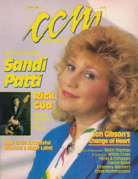

Sandi Patty
|  |
| April 1988 CCM |
 |
| 15 May 2016 CCM Digital |
Media coverage:
- Jul 1980 in Christian Herald "Staying Sensitive To God", by Ron R. Lee
- Feb 1981 in Charisma "Up and Close"
- Jan 1982 in CCM "Gaither Tour Makes Sandi's Dream Come True", by Carolyn A. Burns
- Jan 1983 in CCM "Sandi Patty"
- May 1983 in The Saturday Evening Post "Sandi Patty's Notes of Gladness", by Charles W. Phillips
- Fall 1983 in Today's Christian Woman "Coming of Age on the Road", by Holly G. Miller
- Oct 1983 in Charisma "She Wants Her Audiences To See Jesus", by Dan Stone, Sue Rhodes Sesso
- Apr 1984 in MusicLine "Sandi Patti Triple Winner at 15th Annual Dove Awards"
- Dec 1984 in CCM "Songs for the Family", by Davin Seay
- Dec 1984 in Christian Herald "And Anna Makes Three", by Holly G. Miller
- Jan 1985 in Campus Life "In Their Own Words: Sandi Patty"
- May 1985 in Christian Life "Her Highest Note: Motherhood"
- May 1985 in Christian Life "Reflection"
- Dec 1985 in Fundamentalist Journal "Profile: Sandi Patti Communicates"
- Feb 1986 in Charisma "Interview: In The Face of Change"
- Feb 1986 in MusicLine "Interview: Motivations For Ministry"
- May 1986 in Eternity "Gallery: Safe Sandi Patti", by Richard J Stainslaw
- Sep 1986 in Charisma "News & Views: A Star-Spangled Hit"
- Nov 1986 in Today's Christian Woman "At Home on the Road"
- Jan 1987 in CCM "Notebook: The Heart Behind The Voice"
- Apr 1987 in Religious Broadcasting "Born To Sing", by William C. Ellis
- Apr 1988 in CCM "Home & Heart", by Warren Anderson
- Sep 1988 in Charisma "Music: The View From Heaven", by Steve Lawson
- Jun 1990 in CCM "In The News: Sandi Patti Office Destroyed by Set Fire", by Jeff Brown
- 1990 in Cornerstone "Bias EQ: Arson Destroys Sandi Patti's Offices"
- Jul 1990 in Today's Christian Woman "What A Year", by Dale Hanson Bourke
- Mar 1991 in CCM "In The News: Man Confesses to Setting Sandi Patti Office Fire"
- Apr 1991 in CCM "In The News: Patti, Chapman Nominated for Six Dove Awards Each"
- Aug 1991 in CCM "In The News: It's Dr. Patti Now"
- Apr 1992 in CCM "Christian Musician: New Journeys", by Bruce Adolph
- Sep 1992 in Syndicate "Q Thoughts: Sandi Patty, David Brown"
- Apr 1993 in CCM "Facing Her Forest of Fears", by Thom Granger
- Jul 1993 in Charisma "News Item: Gospel Lawyer Under FBI Investigation", by Ana Gascón Ivey
- Sep 1994 in CCM "In The News: World Vision Offers Aid To Rwanda: Sandi Patti Acts as National Spokesperson", by Gregory J Rumburg
- Feb 1995 in CCM "In The News: Sandi Patti Cancels Spring Tour", by Debra Akins
- 11 Sep 1995 in Christianity Today "News: Patty Weds Former Backup Vocalist", by Doug Jolley, Timothy C. Morgan
- 11 Sep 1995 in Christianity Today "News: Artist Tells of 'Worn-Out, Beaten Down' State", by Timothy C. Morgan
- Oct 1995 in CCM "Sin & The Spotlight", by John W. Styll
- Oct 1995 in CCM "In The News: Sandi Patty Marries, Admits Affairs", by John W. Styll, Debra Akins, April Hefner
- 23 Oct 1995 in Christianity Today "News: Patty's Album, Tour Plans Halted"
- Nov 1995 in Charisma "People & Events: Patty's Critics Are Few, Despite Affair", by Marcia Ford
- Jan 1998 in CCM "The Art of Forgiveness", by Jim Long
- 12 Jan 1998 in Christianity Today "News: North American Scene: Sandi Patti Stages Comeback", by Timothy C. Morgan
- May 1999 in CCM "Heartbreak Hotel", by Melissa Riddle
- Dec 1999 in Church Musician Today "Cadences in Sandi Patty's Life", by Betty McLellan Jones
- Jan 2000 in CCM "Nine Moments that Defined the 90s: Sexual scandals: Michael English, Sandy Patti, Amy Grant & Gary Chapman", by Steve Rabey
- Feb 2004 in CCM "Hall of Fame: Sandi Patty", by Michael Ciani
- Mar 2004 in CCM "Insider: Along Came Sandi", by Andrew Greer
- Oct 2004 in CCM "Another Time Another Place", by Caroline Mitchell
- Jun 2005 in CCM "Beyond Spanglish"
- Aug 2006 in CCM "Lead Me On", by Kristi Henson
- Nov 2011 in CCM Digital "Musicians Corner: In the Studio: Sandi Patty", by Andrew Greer
- Nov 2011 in CCM Digital "Musicians Corner: Gear Guide: The gear that brought Broadway magic to life", by Andrew Greer
- Jun 2012 in CCM Digital "Tour Spotlight: Sandi Patty & Friends Tour, BJCC Concert Hall, Birmingham, AL", by Andrew Greer
- Dec 2012 in CCM Digital "Great Expectations", by Caroline Lusk
- 15 May 2016 in CCM Digital "This is Her Story, This is Her Song: The Final CCM Conversation", by Andrew Greer
- 15 Jun 2017 in CCM Digital "A Journey To Discovery", by Andrew Greer
Albums & reviews:
1979: Sandi's Song
1991: Open For Business
1997: Artist of My Soul
2000: These Days
2002: All The Best... Live [video]
2003: Take Hold of Christ
2005: Yuletide Joy
2009: Duets 2
2013: Everlasting
2016: Sweet Dreams
- Dec 1979 in CCM
- Sep 1981 in Christian Herald, by Ron R. Lee
- Oct 1981 in CCM, by Marie Ameda
- Apr 1982 in CCM, by John W. Styll
- Jul 1982 in Christian Herald, by Ron R. Lee
- Nov 1982 in Campus Life, by Gord Wilson
- Jun 1983 in CCM
- Dec 1983 in Campus Life, by Jim Long
- Dec 1983 in Charisma, by Richard Nakamoto
- Dec 1983 in Eternity, by Richard J Stainslaw
- Dec 1983 in Christian Herald, by Peter Gross
- Dec 1983 in The Lutheran, by Steve Rabey
- Dec 1988 in Eternity, by Richard J Stainslaw
- Oct 1984 in CCM, by Caroline Amedea
- Feb 1985 in Campus Life
- Mar 1985 in Christian Herald, by Peter Gross
- Apr 1985 in Moody, by Steven F. Davis
- Jun 1985 in Christian Life, by Peter Crescent
- Nov 1985 in MusicLine, by Thom Granger
- Nov 1985 in Charisma, by Steve Lawson
- Nov 1985 in CCM, by Bob Darden
- Dec 1985 in Campus Life
- Dec 1985 in The Lutheran, by Steve Rabey
- Jan 1986 in Christian Herald, by Peter Gross
- Apr 1986 in Moody, by Steven F. Davis
- Feb 1986 in MusicLine, by Thom Granger
- Apr 1986 in CCM, by Bruce A. Brown
- May 1986 in Campus Life, by Jim Long
- Jun 1986 in Christian Herald, by Peter Gross
- Jun 1986 in Fundamentalist Journal, by Don Norman
- Jul 1986 in Charisma, by Steve Lawson
- Oct 1986 in Moody, by Steven F. Davis
- 1 Apr 1987 in The Lutheran, by Steve Rabey
- Jun 1987 in Charisma
- Aug 1987 in CCM, by Thom Granger
- Nov 1988 in Christian Herald, by Peter Gross
- Apr 1988 in Campus Life, by Jim Long
- Apr 1988 in CCM, by Warren Anderson
- May 1988 in Christian Herald, by Peter Gross
- Jul 1988 in Moody, by Steven F. Davis
- May 1989 in Charisma, by Steve Lawson
- Sep 1989 in Christian Herald, by Peter Gross
- Mar 1990 in Christian Herald, by Peter Gross
- Nov 1990 in CCM, by Thom Granger
- Dec 1990 in Campus Life
- Jan 1991 in Christian Herald, by Peter Gross
- Jan 1991 in Moody, by Donna L. Hankins
- Feb 1991 in Charisma, by Carol A Chapman
1991: Open For Business
- Spr 1992 in Today's Better Life
- Dec 1992 in Campus Life, by Jim Long
- Dec 1992 in CCM, by Thom Granger
- May 1993 in CCM, by Bruce A. Brown
- Jun 1993 in The Lighthouse, by Jean Patty
- Jul 1993 in Campus Life
- Sep 1993 in Today's Christian Woman
- Fall 1993 in Today's Better Life
- Win 1994 in YouthWorker, by Steve Rabey
- Oct 1994 in CCM, by Thom Granger
- Nov 1994 in Today's Christian Woman, by Camerin J Courtney
1997: Artist of My Soul
- Nov 1997 in CCM, by Melissa Riddle
- Dec 1997 in Aspire
2000: These Days
- Dec 2000 in CCM, by Melissa Riddle
- Jan 2001 in CBA Marketplace, by Steve Parolini
- Mar 2001 in Today's Christian Woman
- Apr 2001 in Charisma, by Twanna Powell Crenshaw
- Feb 2000 in CCM, by Rhonda Owens
2002: All The Best... Live [video]
2003: Take Hold of Christ
- Mar 2003 in CBA Marketplace, by Steve Parolini
- Jun 2003 in CCM, by David McCreary
- Oct 2004 in CCM, by Li Liu
- Mar 2005 in Today's Christian Woman, by Lisa Ann Cockrel
2005: Yuletide Joy
- Dec 2005 in Charisma, by Leigh Devore
- Dec 2005 in CCM
- Dec 2005 in CCM, by Debra Akins
- Dec 2006 in CCM, by Kristi Henson
- May 2007 in Worship Leader
- Jul 2008 in Worship Leader
- Dec 2009 in Christianity Today, by Andrew Greer
2009: Duets 2
- Jun 2009 in Worship Leader
- Sep 2010 in CCM Digital, by Andy Argyrakis
2013: Everlasting
- Nov 2013 in CCM Digital, by Matt Conner
- 1 Jul 2014 in CCM Digital, by Andy Argyrakis
- 15 Dec 2014 in CCM Digital
2016: Sweet Dreams
Award Summary (Nominations / Wins)
Dove Awards- Female Vocalist
- Inspirational Album: Lift Up the Lord
- Artist
- Female Vocalist
- Inspirational Album: More Than Wonderful (Live)
- Inspirational Album: The Gift Goes On
- Artist
- Recorded Music Packaging: More Than Wonderful (Live)
- Female Vocalist
- Inspirational Album: Songs From the Heart
- Artist
- Female Vocalist
- Song: "In the Name of the Lord"
- Female Vocalist
- Inspirational Album: Morning Like This
- Artist
- Song: "In The Name Of The Lord"
- Female Vocalist
- Artist
- Female Vocalist
- Inspirational Album: Make His Praise Glorious
- Artist
- Instrumental Album: A Symphony of Praise
- Inspirational Recorded Song: "In Heaven's Eyes"
- Female Vocalist
- Artist
- Children's Music Album: Sandi Patti and The Friendship Company
- Song: "Another Time, Another Place"
- Female Vocalist
- Inspirational Album: Another Time... Another Place
- Artist
- Long Form Music Video: Make His Praise Glorious [video]
- Inspirational Recorded Song: "I'll Give You Peace"
- Contemporary Recorded Song: "Another Time, Another Place"
- Female Vocalist
- Artist
- Children's Music Album: Open For Business
- Short Form Music Video: "Another Time, Another Place"
- Inspirational Recorded Song: "For All The World"
- Song: "Who Will Call Him King of Kings?"
- Inspirational Album: Le Voyage
- Short Form Music Video: "Hand On My Shoulder"
- Inspirational Recorded Song: "Hand on My Shoulder"
- Female Vocalist
- Inspirational Album: Find It on the Wings
- Inspirational Recorded Song: "Carry On"
- Inspirational Album: Artist of My Soul
- Spanish Language Album: Libertad de Mas
- Long Form Music Video: All The Best... Live [video]
- Inspirational Album: Take Hold of Christ
- Inspirational Album: Hymns of Faith... Songs of Inspiration
- Female Vocalist
- Inspirational Album: Falling Forward
- Female Vocalist
- Inspirational Album: Songs for the Journey
- Inspirational Album: The Edge of the Divine
- Inspirational Album: Everlasting
- Children's Music Album: Sweet Dreams
- 1983 Grammy Awards
- Best Gospel Performance by a Duo or Group: "More Than Wonderful"
- Best Gospel Performance by a Duo or Group, Choir or Chorus: "I've Just Seen Jesus"
- Best Gospel Performance, Female: "Morning Like This"
- Best Gospel Performance by a Duo or Group, Choir or Chorus: "They Say"
- Best Pop Gospel Album: Another Time... Another Place
Books about Sandi Patty
- "Sandi Patty" in The Encyclopedia of Contemporary Christian Music (Mark Allan Powell, 2002)
- "Sandi Patty" in The Billboard Guide to Contemporary Christian Music (Barry Alfonso, 2002)
Published articles:
© 2011 CMnexus. Last updated April 2021. Contact: editor -AT- cmnexus -DØT- org About